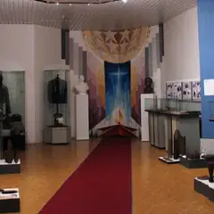

Районы · Зеленоград
Куда сходить в Зеленограде
10 мест в Зеленограде: 3 бара, 2 ресторана или кафе, 2 места для прогулки и 1 музей. Например, «Парк 40-летия Победы», «Зеленоградский лесопарк» и «Музей Зеленограда». 5 готовых планов начинаются здесь.
- 10 мест
- 5 планов
- 1 клуб
Места 9
Зеленоград, Савёлки
Главный парк Зеленограда с прудом и прогулочными аллеями.
Подробнее и маршрут: Парк 40-летия ПобедыПозвать сюда: Парк 40-летия Победы
Фото: Sergey A. Demidov, CC BY 4.0 · Wikimedia Commons
Зеленоград
Лес прямо в Зеленограде: озёра, тропы и лыжня зимой.
Подробнее и маршрут: Зеленоградский лесопаркПозвать сюда: Зеленоградский лесопарк
Фото: Вячеслав Ребров, CC BY 3.0 · Wikimedia Commons

Зеленоград
Краеведческий музей Зеленограда: история города и окрестностей.
Подробнее и маршрут: Музей ЗеленоградаПозвать сюда: Музей Зеленограда
Фото: mos.ru, CC BY 4.0 · Wikimedia Commons
Зеленоград, ул. Юности, 17
Новое
Драмтеатр Зеленограда в здании после реставрации: комедии и исторические драмы, сильная труппа, удобные кресла и буфет. Билеты 600–2400 ₽.
Подробнее и маршрут: Ведогонь-театрПозвать сюда: Ведогонь-театр
Зеленоград, корп. 315
Новое
Коктейльный бар с весёлой молодой командой: хайболы, джин-тоник в бутылочке, батат с креветками, настолки и веранда. В пт–сб до 2:00.
Зеленоград, Савёлкинский пр., 10
Новое
Ресторан-лаунж в центре Зеленограда: итальянская и паназиатская кухня, настойки, кальяны, диджеи и веранда (вечером на ней курят). В пт–сб до 4 утра.
Зеленоград, пл. Юности, 2, стр. 1
Новое
Кафе в Зеленограде, где завтраки подают весь день: драники, бенедикты, вафли с солёной карамелью. Своя пекарня и летняя веранда.
Зеленоград, Никольский пр., 2
Новое
Ресторан европейской и паназиатской кухни с живым джазом и соулом: осьминог, авторские десерты, коктейли, летняя веранда. Завтраки с утра, в пт–сб до 2:00.
Зеленоград, корп. 405А
Новое
Английский паб со стейками в 4-м микрорайоне Зеленограда: около 70 сортов пива и регулярные спортивные трансляции — удобная точка для матча, не выезжая в центр.


Готовые планы 5
- Парк 40-летия Победы · Парк · Зеленоград — Крюково (МЦД-3)
- 27 минут пешкомBrunch Time · Кафе завтраков
Утренний круг вокруг пруда в главном парке Зеленограда, а потом Brunch Time, где драники, бенедикты и вафли с солёной карамелью подают весь день.
Открыть план: Зеленоград: пруд и завтрак весь деньПозвать сюда: Зеленоград: пруд и завтрак весь день
Фото: Sergey A. Demidov, CC BY 4.0 · Wikimedia Commons
- Парк 40-летия Победы · Парк · Зеленоград — Крюково (МЦД-3)
- 19 минут пешкомЗеленоградский лесопарк · Лесопарк
Парк с прудом и прогулка по Зеленоградскому лесопарку.
Открыть план: Выходной в ЗеленоградеПозвать сюда: Выходной в Зеленограде
Фото: Sergey A. Demidov, CC BY 4.0 · Wikimedia Commons
- Ведогонь-театр · Театр · Зеленоград — Крюково (МЦД-3)
- 12 минут пешкомGoodson bar · Коктейльный бар
Комедия в «Ведогонь-театре» с сильной труппой и билетами от 600 ₽, а потом хайболы и джин-тоник в бутылочке в Goodson bar.
Открыть план: Зеленоград: комедия и хайболыПозвать сюда: Зеленоград: комедия и хайболы
- Ведогонь-театр · Театр · Зеленоград — Крюково (МЦД-3)
- 16 минут пешкомZiamo · Ресторан
Спектакль в «Ведогонь-театре» после реставрации, а потом ужин в Ziamo под живой джаз или соул — осьминог и авторские десерты.
Открыть план: Зеленоград: театр и джаз за ужиномПозвать сюда: Зеленоград: театр и джаз за ужином
- Goodson bar · Коктейльный бар · Зеленоград — Крюково (МЦД-3)
- 18 минут пешкомАрво · Ресторан-лаунж
Хайболы и батат с креветками в Goodson bar, а потом ресторан-лаунж «Арво» в центре Зеленограда: настойки, диджеи и в пятницу–субботу до 4 утра.
Открыть план: Зеленоград: хайболы и лаунжПозвать сюда: Зеленоград: хайболы и лаунж
Компьютерные клубы 1
Зеленоград, Новокрюковская ул., 10
Клуб у станции Крюково: мощные игровые ПК, буткемпы и консоли.
Подробнее и маршрут: Colizeum ЗеленоградПозвать сюда: Colizeum Зеленоград
Как позвать
- Выбери план, место или событие — в карточке адрес, цены и маршрут в Яндекс Картах.
- Нажми «Позвать сюда» — соберётся приглашение-игра для свидания или голосование для компании.
- Отправь ссылку в любой мессенджер: тебе ответят, а компания отметит, куда и когда может. Бесплатно и без регистрации.